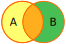
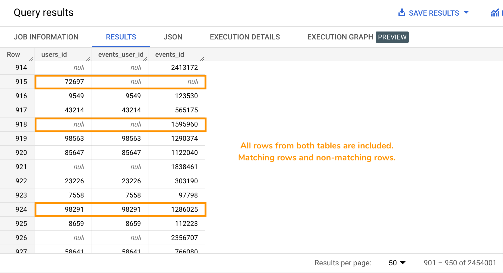

Image credits: GermanX, CC BY-SA 4.0
A FULL OUTER JOIN, or simply OUTER JOIN, is a type of JOIN where matching rows, AND non-matching rows from the left table, are combined with matching rows, AND non-matching rows from the right table to create a new table. No rows are ignored, all rows from both tables are included.
The matching is usually done using an identifier column that's present in both tables. For example, rows where table_1.primary_key_x = table_2.foreign_key_x.
The syntax looks like this: SELECT column A, column B, ..., column N FROM table_1 FULL OUTER JOIN table_2 ON matching_set_of_conditions.
👉 Check out Visual JOIN to see a visual representation of how it works.
Now observe carefully the results of the following queries.
👉 Check out Visual JOIN to see a visual representation of how it works.
SELECT users.id AS users_id, events.user_id AS events_user_id, events.id AS events_id
FROM bigquery-public-data.thelook_ecommerce.users
FULL OUTER JOIN bigquery-public-data.thelook_ecommerce.events
ON users.id = events.user_id
WHERE users.id IS NULL OR events.user_id IS NULL
ORDER BY RAND();
Example results:

{% include practice_problems_intructions.html %}
bigquery-public-data.thelook_ecommerce.users
bigquery-public-data.thelook_ecommerce.events
Write a query that will show the number of users with no events and the number of events with no users.
| users_with_no_events | events_with_no_users |
|---|---|
| 20008 | 1125749 |
SELECT COUNT(DISTINCT users.id) AS users_with_no_events,
COUNT(DISTINCT events.id) AS events_with_no_users
FROM bigquery-public-data.thelook_ecommerce.users
FULL OUTER JOIN bigquery-public-data.thelook_ecommerce.events
ON users.id = events.user_id
WHERE events.id IS NULL
OR users.id IS NULL;